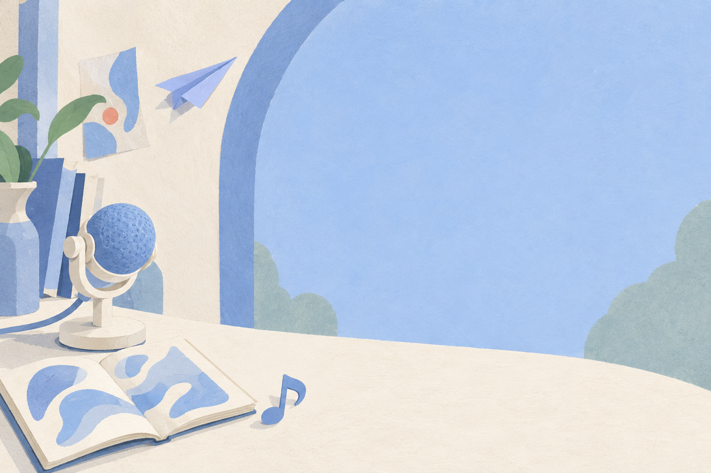

01 / 角色建模与动态表达
Live2D
从静态形象，
到有回应的角色。
围绕分层原画、表情口型与头发运动，研究不同姿态下的形体一致性，让角色的动态表达更加自然。
- 正在开展
- 模型运行与口型时间轴；持续迭代转头、表情与头发仿真。
- 关注问题
- 透视与遮挡、组合姿态，以及动作的连续性与稳定性。
Resonance
Embodiment
Multimodality

01 / research
从一帧动作、一句话，到一首歌。
让形象、声音与表达逐渐成为一个整体。
01 / 角色建模与动态表达
从静态形象，
到有回应的角色。
围绕分层原画、表情口型与头发运动，研究不同姿态下的形体一致性，让角色的动态表达更加自然。


02 / 角色声音与语言表达
让文字，
带上角色的声音。
从语料整理到合成、试听与版本比较，探索角色音色、语言与表达方式之间的联系。

03 / 歌声转换与音乐表达
在旋律里，
听见另一种表达。
把人声分离、音色转换、逐句修整与混音串成可重复执行的流程，以对照试听检验每一次调整。
02 / practice
保留过程，也保留失败。
每一个作品，都是下一次探索的起点。
将“更像角色”拆成声音、形状、运动与表达上可以观察的问题。
记录输入、参考素材与版本，保留能够重复运行的起点。
通过姿态检查、对齐试听与问题记录判断变化，明确尚未解决的部分。
沉淀原始工程、实验记录与制作教程，让结果能够被解释和重现。
03 / people
founder · principal investigator
REM Lab 创始人、独立课题组组长。负责研究选题、实验设计、工程实现与评测，围绕三个研究方向持续开展研究与作品制作。
research collaborator
一名现于多伦多工作的工程师已以研究协作者（Collaborator）身份加入，共同推进课题探索与工程实践。
04 / open call
开放招募中招募首批研究生
及研究协作者。
研究方向由兴趣驱动。无论希望加入课题研究，还是以 Collaborator 身份参与合作，都欢迎分享你正在关注的问题与想做的作品。
有意加入或开展合作，请发送个人简历及感兴趣的研究方向；也欢迎附上已有作品或项目链接。
cancansauce@163.com ↗